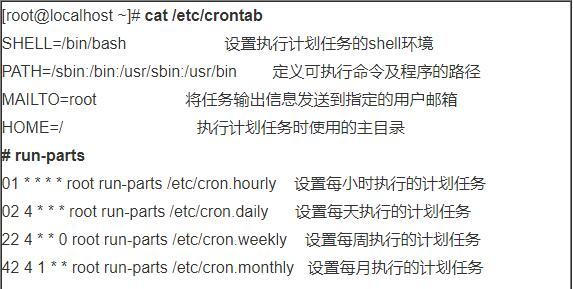
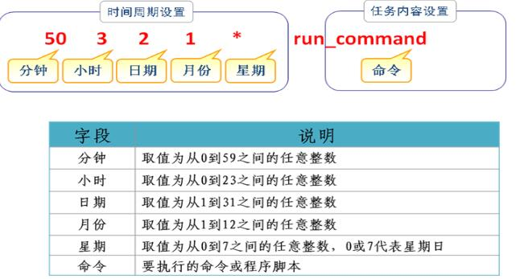
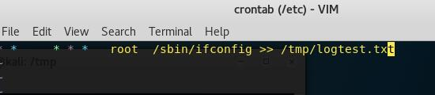
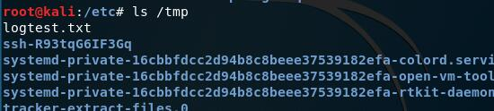

Linux通过crontab实现命令执行
Updated:
一、计划任务
Crontab 周期性任务管理
主要设置文件：
全局配置文件，位于文件：/etc/crontab
系统默认的设置，位于目录：/etc/cron.*/
用户定义的设置，位于文件：/var/spool/cron/用户名
/etc/crontab
系统任务配置文件。设置维护linux系统所需的任务，由linux系统及相关程序在安装时自动设置

/var/spool/cron/
由用户自行设置（使用crontab命令）的cron计划任务将被保存到目录/var/spool/cron中，文件名与用户名相同。
Eg：root用户的cron计划任务保存在配置文件/var/spool/cron/root中
常见操作
1.编辑用户的计划任务列表: crontab -e [-u 用户名]
2.查看用户的计划任务列表: crontab -l [-u 用户名]
3.删除用户的计划任务列表: crontab -r [-u 用户名]

案例
a) 每天早上7:50自动开启sshd服务，22:50关闭sshd服务
50 7 * * * /sbin/service sshd start 50 22 * * * /sbin/service sshd stopb) 每隔5天清空一次FTP服务器公共目录“/var/ftp/pub”中的数据
0 0 */5 * * /bin/rm -rf /var/ftp/pub/*c) 每周六的7:30重新启动系统中httpd服务
30 7 * * 6 /sbin/service httpd restartd) 每周一、周三、周五下午17:30使用tar命令自动备份/etc/httpd目录
30 17 * * 1,3,5 /bin/tar jcf httpdconf.tar.bz2 /etc/httpd
备注
crond守护进程会自动检查/etc/crontab文件、/etc/cron.d/目录以及/var/spool/cron目录中的改变，所以修改后无需重启。
但是测试发现： crontab -e 命令编辑当前用户的计划任务，所有系统不需要重启，可以直接生效。在 Ubuntu下直接在 /var/spool/cron/crontabs/目录下新建一个用户文件，在该文件中配置计划任务，需要调用 crontab /var/spool/cron/crontabs/root 才能使配置生效。
二、本地测试
测试环境
操作系统：Linux kali 4.14.0-kali3-amd64
替换/etc/crontab
本地创建crontab文件，内容如下：

使用该文件覆盖掉原有/etc/crontab文件，一分钟后打开/tmp/目录，可以看到生成的logtest.txt文件（无需重启，自动生效）。
